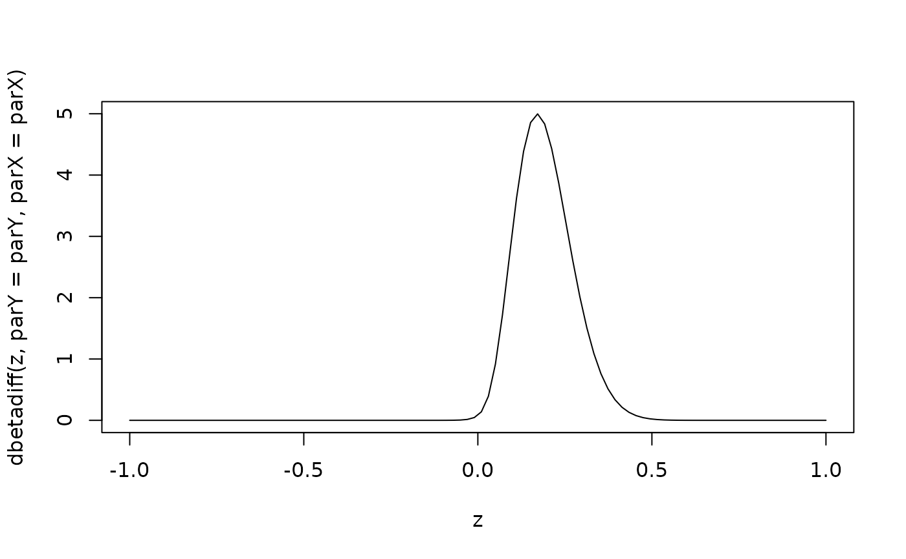

![[Experimental]](figures/lifecycle-experimental.svg)
The Probability Density Function of the difference of two Beta Distributions.
Density, distribution function and quantile function for
the distribution of the difference of two Beta distributions with parameters parX and parY.
We denote X and Y as two random variables representing the response rate of Control and Treatment
group respectively. The assignment of Control and Treatment is practically interchangeable.
We denote Z as the difference between two groups such that Z = Y-X.
Arguments
- z
(
numeric):
vector of differences between Control and Treatment arms such thatZ = Y-X- parY
(
numeric):
two parameters ofY's Beta distribution (Treatment)- parX
(
numeric):
two parameters ofX's Beta distribution (Control)- eps
(
number):
lowest floating point number as lower bound of integration- rel.tol
(
number):
used instats::integrate()
Examples
# The following examples use these parameters:
parX <- c(1, 52)
parY <- c(5.5, 20.5)
# The difference between Control and Treatment is denoted as z.
z <- seq(from = -1, to = 1, length = 100)
plot(z, dbetadiff(z, parY = parY, parX = parX),
type = "l"
)

# Calculate probability of Go, if difference was at least 15%.
test <- integrate(
f = dbetadiff,
parY = parY,
parX = parX,
lower = 0.15,
upper = 1
)
str(test)
#> List of 5
#> $ value : num 0.677
#> $ abs.error : num 2.41e-07
#> $ subdivisions: int 1
#> $ message : chr "OK"
#> $ call : language integrate(f = dbetadiff, lower = 0.15, upper = 1, parY = parY, parX = parX)
#> - attr(*, "class")= chr "integrate"
test$value
#> [1] 0.677447
# Calculate probability of Stop, if difference was at most 50%.
integrate(
f = dbetadiff,
parY = parY,
parX = parX,
lower = -1,
upper = 0.5
)
#> 0.9993974 with absolute error < 8.6e-06